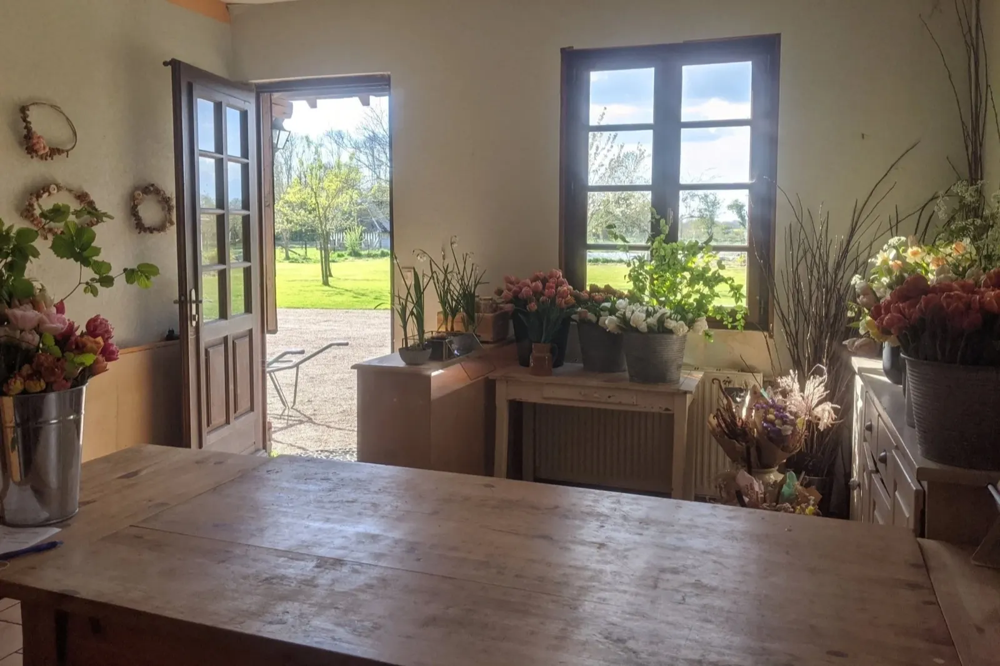
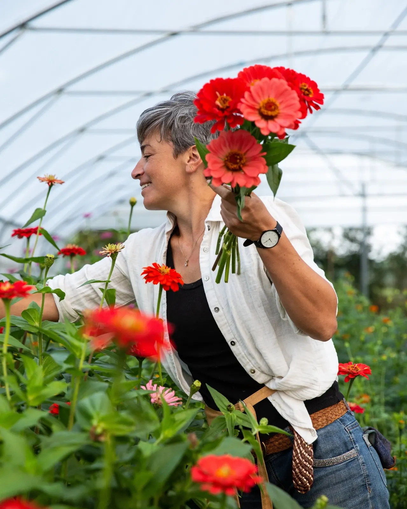
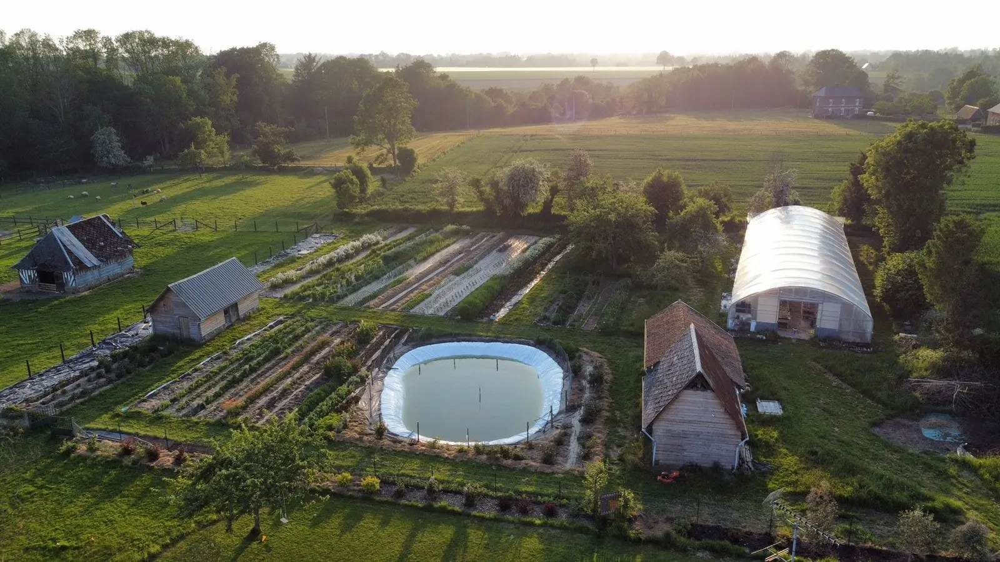
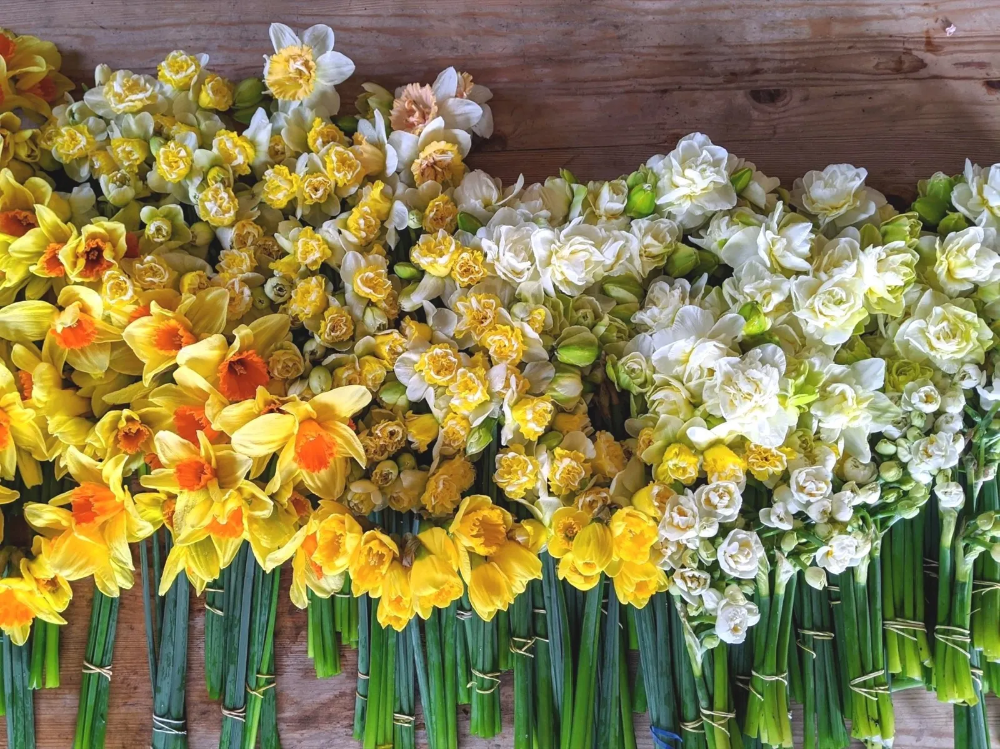
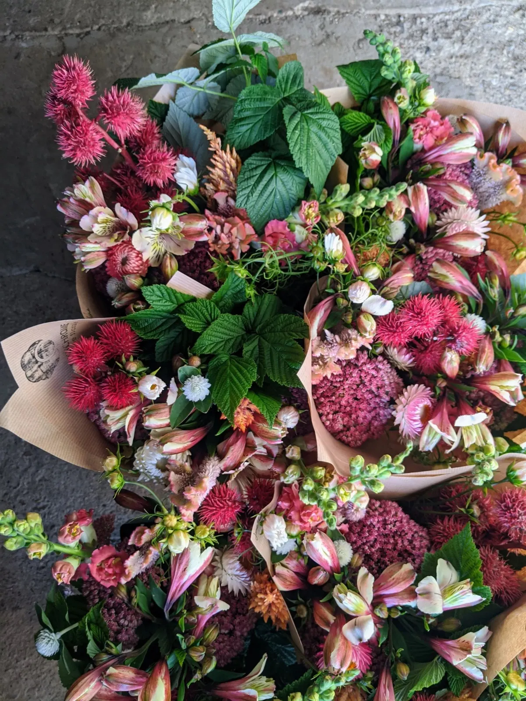
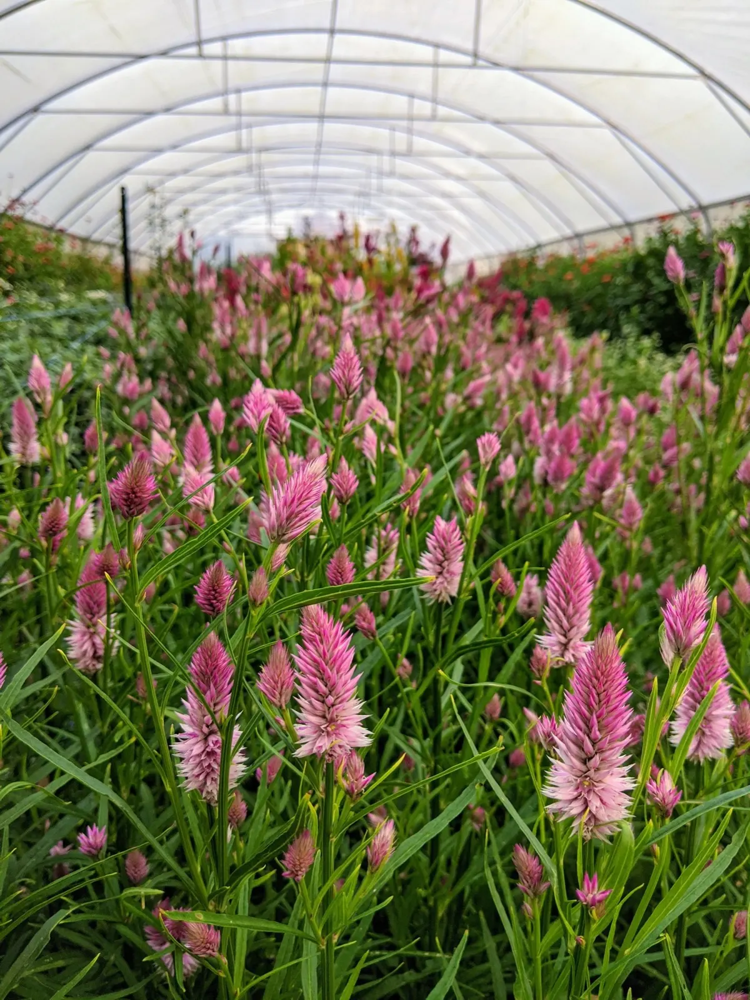
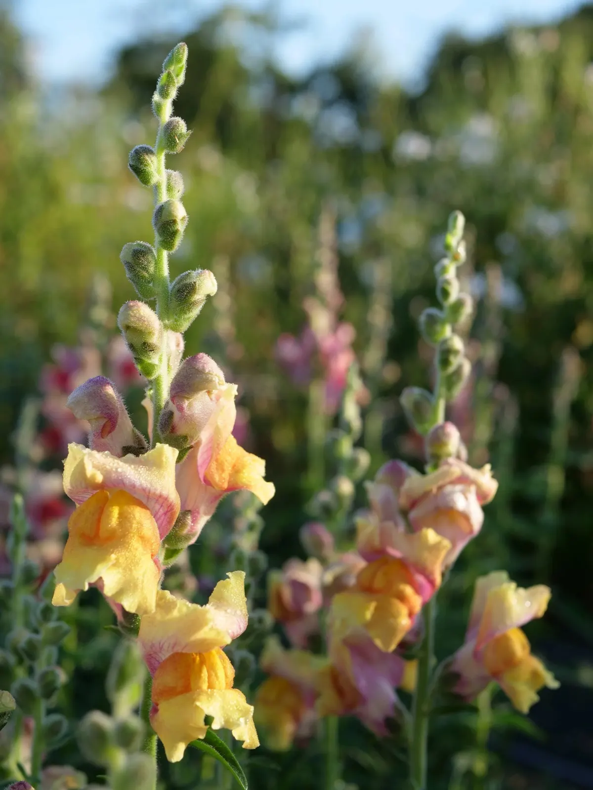
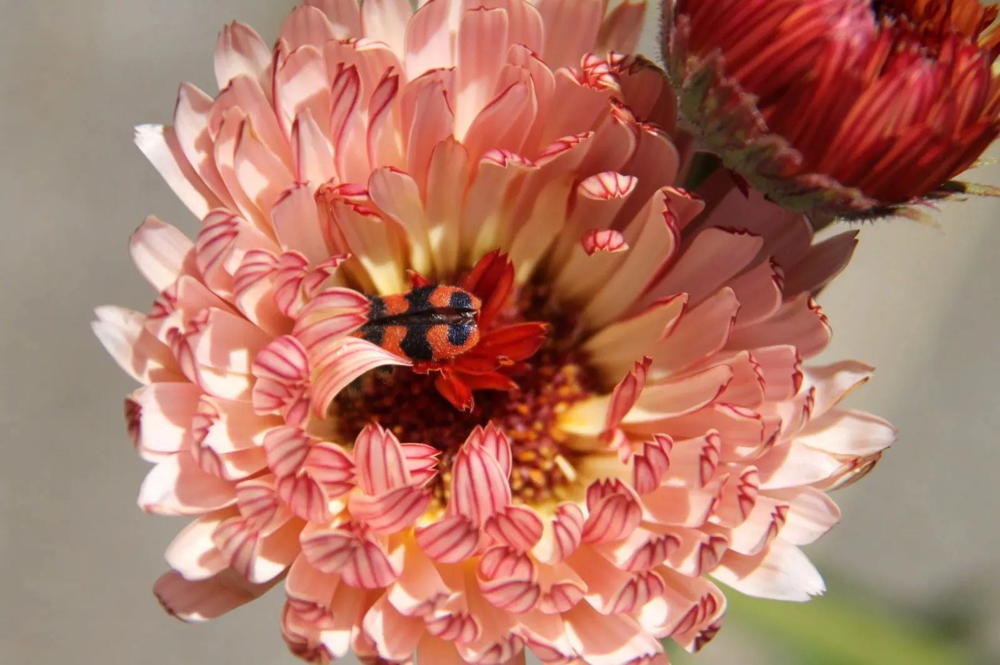
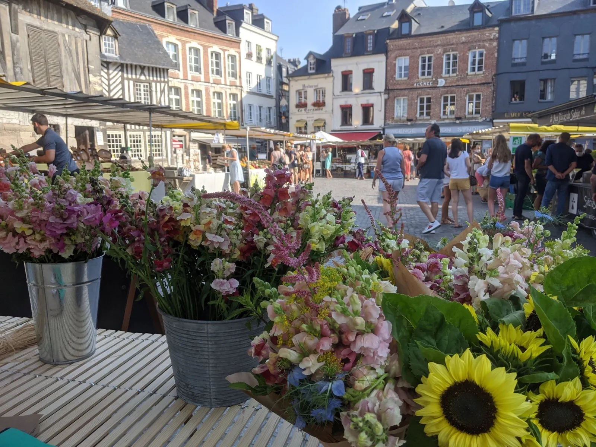
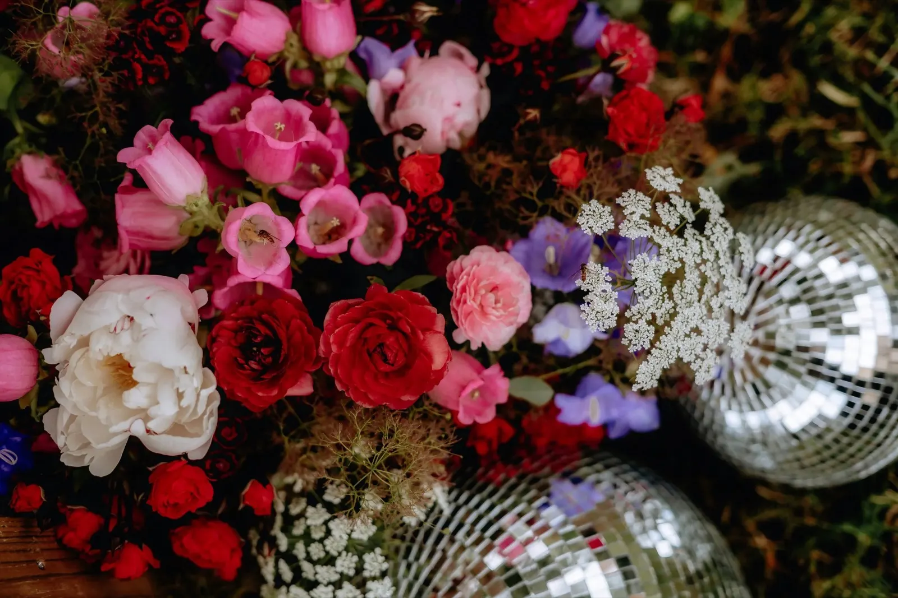

Vente à la ferme
230 rue de la Fontaine Domin, 27210 Vannecrocq
Le vendredi, 17 h-19 h

Polychrome est une ferme florale à Vannecrocq, en Normandie. Stéphanie y cultive des fleurs locales et de saison en agriculture biologique, pour les particuliers et les professionnels.

Fleurs bio de la graine au bouquet


Dans un écosystème riche de ses haies, de sa mare et de ses pommiers, plusieurs dizaines de variétés de fleurs et de feuillages sont cultivées.
Elles sont choisies pour leur résistance, leurs couleurs et leurs parfums, et pour fleurir sans interruption du printemps à l'automne. Aucun intrant de synthèse : l'objectif est un écosystème riche et résilient, propice à la fleur coupée.
Seule on ne fait rien, ensemble on peut tout.
Stéphanie, Polychrome ferme florale
Aussi loin que je me souvienne, la présence des fleurs m'a toujours procuré beaucoup de joie. Lorsque l'idée d'une ferme florale a germé, j'ai suivi des formations, des stages et des expériences en bénévolat dans le domaine de la fleur coupée. Après 2 ans d'apprentissage et de réflexion, j'ai lancé mon projet.
Notre famille s'est installée fin 2020 à Vannecrocq, dans une maison normande avec ses dépendances, son champ, sa mare et ses nombreux pommiers. Polychrome, c'est aussi une aventure collective, rendue possible par la confiance et l'aide de mes proches.

Un bouquet de la ferme à chaque date de livraison choisie, à retirer dans un point de collecte à Caen ou dans l'Eure. Un abonnement floral, c'est :
Bouquet simple ou bouquet double. À Caen, formules de 3, 6, 9 ou 12 bouquets ; dans l'Eure, de 3, 6 ou 9 bouquets.
C'est un cadeau ? Indiquez-le en commentaire au moment de la commande : Stéphanie vous contacte pour vous transmettre une carte cadeau.
Une formule de 3 à 12 bouquets (1 bouquet = 1 date de livraison), puis la taille des bouquets.
Mon point de collecte préféré et les dates qui me conviennent parmi celles proposées, puis je paye en ligne.
Un texto arrive avant la réception de chaque bouquet.
Je vais chercher mon bouquet et je reçois par email la liste des variétés qui le composent.
Le point de collecte se choisit au moment de la commande.
Les bouquets suivent ce qui fleurit au champ et sous le tunnel. Quelques-unes des variétés cultivées :
Narcisses, tulipes, renoncules, pivoines, ancolies, mufliers, nigelles, campanules, pois de senteur, iris, delphinium…
Dahlias, achillées, immortelles, cosmos, zinnias, scabieuses, camomille, tournesols, célosies…



À la ferme, au marché de Honfleur, et par abonnement dans les points de collecte de Caen et de l'Eure.

230 rue de la Fontaine Domin, 27210 Vannecrocq
Le vendredi, 17 h-19 h

Place Sainte-Catherine, le samedi matin pendant la saison.
Le samedi, 8 h 30-13 h
Les fleurs qui se succèdent au rythme des saisons offrent un bel éventail de couleurs, de formes, de textures et de parfums, pour des décors toujours vivants et en accord avec la nature environnante.
Les compositions sont réalisées dans un style floral naturel, selon la palette de couleurs de votre choix. Les compositions piquées sont faites sans mousse florale.

Proposition de Nicolas Masset pour Polychrome ferme florale